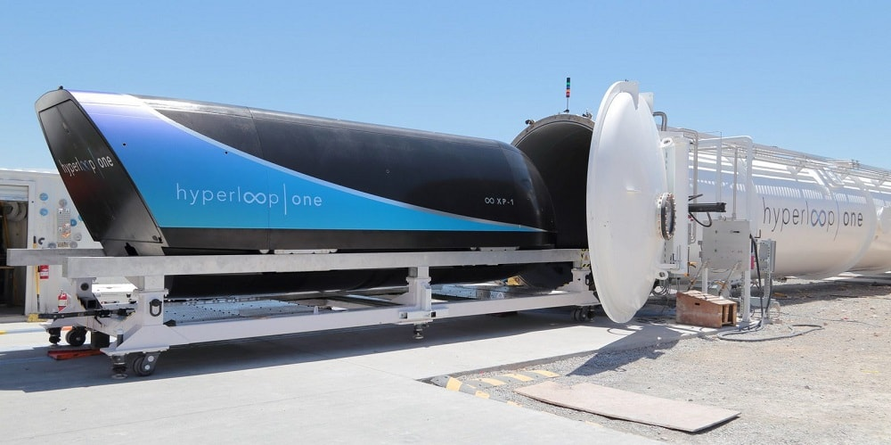
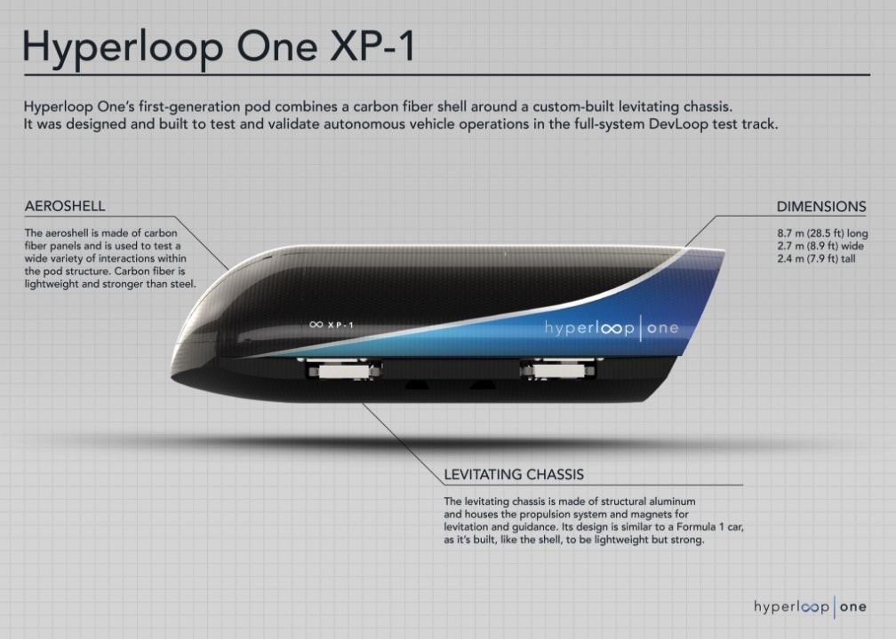

A hyperloop is a proposed mode of passenger and/or freight
transportation, first named as such in an open-source vactrain design
released by a joint team from Tesla and SpaceX. Drawing heavily from
Robert Goddard's vactrain, a hyperloop comprises a sealed tube or system
of tubes through which a pod may travel free of air resistance or
friction conveying people or objects at optimal speed and acceleration.
Elon Musk's version of the concept, first publicly mentioned in 2012,
incorporates reduced-pressure tubes in which pressurized capsules ride
on air bearings driven by linear induction motors and air compressors.

The Hyperloop Alpha concept was first published in August 2013,
proposing and examining a route running from the Los Angeles region to
the San Francisco Bay Area roughly following the Interstate 5 corridor.
The paper conceived of a hyperloop system that would propel passengers
along the 350-mile (560 km) route at an average speed of around 600 mph
(970 km/h), with a top speed of 760 mph (1,200 km/h), allowing for a
travel time of 35 minutes, which is considerably faster than current
rail or air travel times. Calculate your route's time. Preliminary cost
estimates for this LA–SF suggested route were included in the white
paper—US$6 billion for a passenger-only version, and US$7.5 billion for
a somewhat larger-diameter version transporting passengers and vehicles
— although transportation analysts had doubts that the system could be
constructed on that budget; some analysts claimed that the Hyperloop
would be several billion dollars overbudget, taking into consideration
construction, development and operation costs.

The Hyperloop concept has been explicitly "open-sourced" by Musk and
SpaceX, and others have been encouraged to take the ideas and further
develop them.
To that end, a few companies have been formed, and several
interdisciplinary student-led teams are working to advance the
technology. SpaceX is building an approximately 1-mile-long (1.6 km)
subscale track for its pod design competition at its headquarters in
Hawthorne, California.
Some experts are skeptical, saying that the
proposals ignore the expenses and risks of developing the technology and
that the idea is "completely impractical". Claims have also been made
that the Hyperloop is too susceptible to disruption from a power outage
or terror attacks to be considered safe.